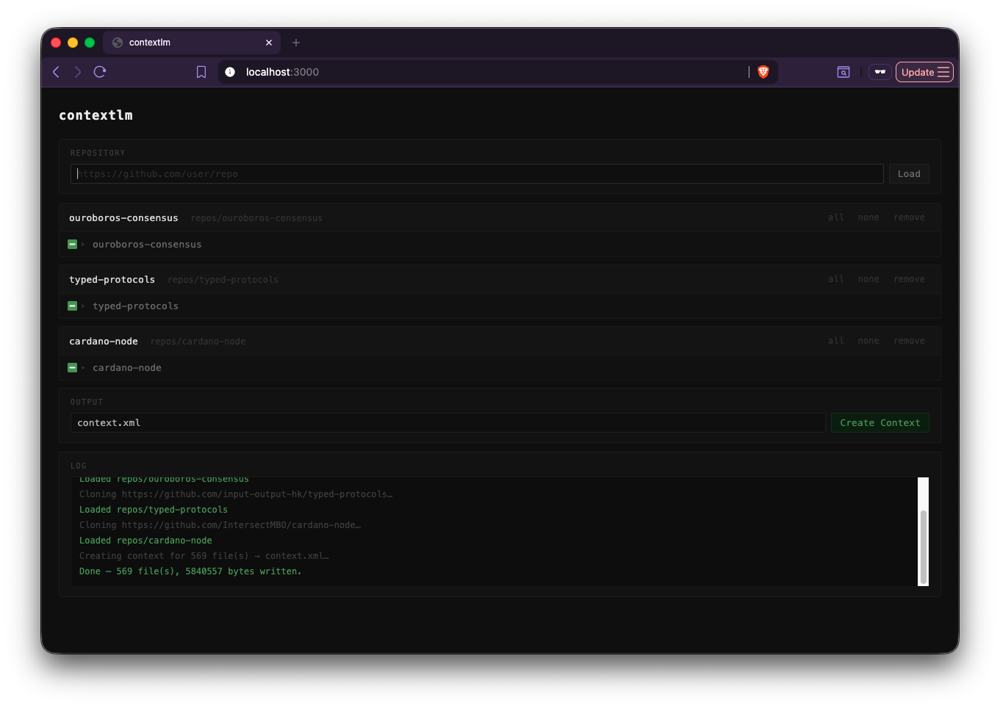

I recently got onboarded onto a new project. As expected, there was a lot of context to absorb before I could meaningfully contribute. There is a lot of documentation to read, systems to understand, and, of course, a bunch of “stupid” questions to ask.
To speed things up, I’ve been leveraging LLMs for asking questions and navigating unfamiliar codebases.
When I approach a new repository, my workflow looks something like this:
- Start a coding agent
- Ask questions about the code
- Let it explore and respond
It works… but not perfectly.
There is an immediate problem here: I have no real idea what context the LLM is actually using.
Sometimes:
- It scans and ingests unnecessary directories and files
- Other times, it lacks important context because it lives elsewhere.
So I end up in this awkward situation where:
- The model knows too much of the wrong stuff
- And too little of the right stuff
That’s not great.
I want to control the context I feed to the LLM. I want to know exactly what it sees so I can push the right information and avoid unnecessary noise.
A quick search led me to tools like onefilellm and aider. aider felt a bit too heavy for what I wanted. onefilellm was closer to what I had in mind.
I could’ve just used onefilellm and called it a day. This blog post wouldn’t exist if I had :)
There were two reasons why I did not use onefilellm:
- The silly one:
- No straightforward installation method
- I’ve installed
pipvianix, so extra setup friction
- The serious one: I wanted to vibe code.
The goal is to create something similar to onefilellm. I’ve never used it so I’m not sure whether I’ve created something similar or different.
The idea is very simple:
- A CLI tool + web UI.
- You input the repository path in the UI.
- You get a clean interface to:
- Browse files
- Select exactly what should go into the LLM context
And voila, here we are. After spending 20 USD and burning all my tokens, I present to you: contextlm.
Try it out using:
nix run github:adithyaov/contextlm -- --action serve
This was mostly built using Claude. I’ve occasionally refactored and fixed a few things but was not too involved in programming it.
My experience vibe coding
Overall, it was a great experience. I used Claude as my coding assistant, and it was surprisingly capable. It was able to create exactly what I wanted - the end product, and how the code is written.
It was great with Haskell but was exceptional when the task involved Javascript and HTML. It may possibly be because of the skewed training data.
I didn’t just give it a vague prompt and let it run wild. After every step, I performed a thorough review and gave it specific instructions. The instructions involved type signatures, examples, and any required additional context - like I would give to a fellow human.
I sometimes had to stop it when it went on an unnecessary spiral of trying to fix a compile error, though this was not very often.
But it was indeed able to perform all the tasks to my satisfaction!
That said, I’m not blown away. At least not in the same way an ICE engine, or an Operating System blows me away. And I’m not sure why. It may possibly be because of the hype. In my case it did not live up to the hype and the billions of dollars that went into its development.
Like any tool, the user is responsible to bring the most out of it. At the moment, I’m not a power user of coding agents. So it is possible that I don’t yet see the true potential.
I’m excited to see how this evolves and what the future holds.